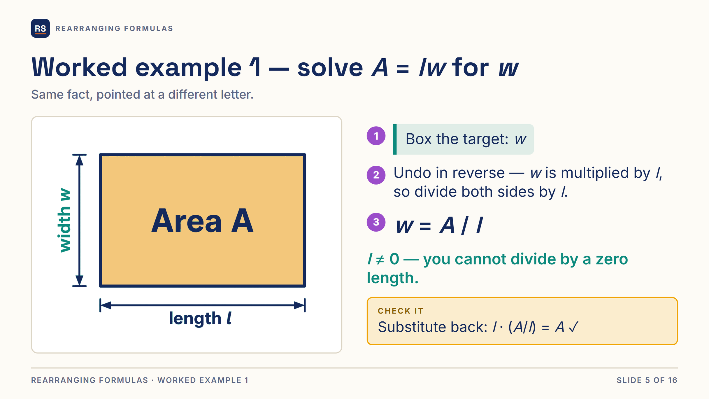
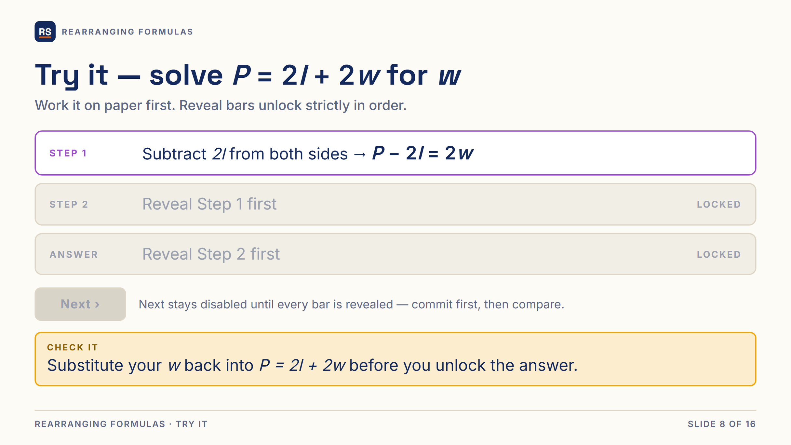
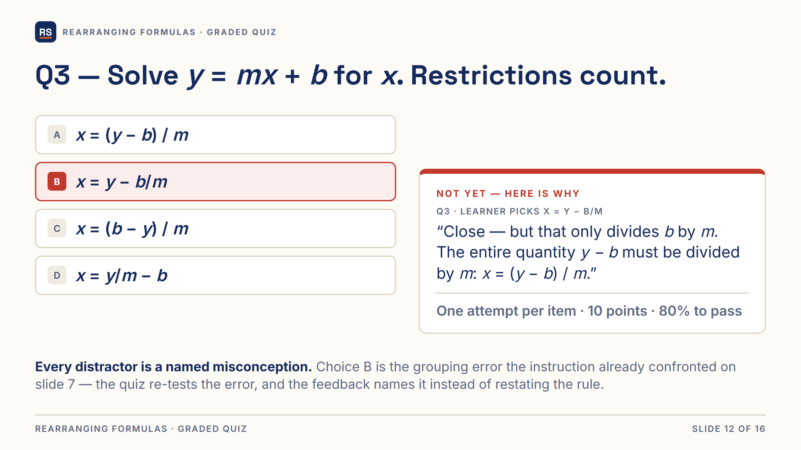
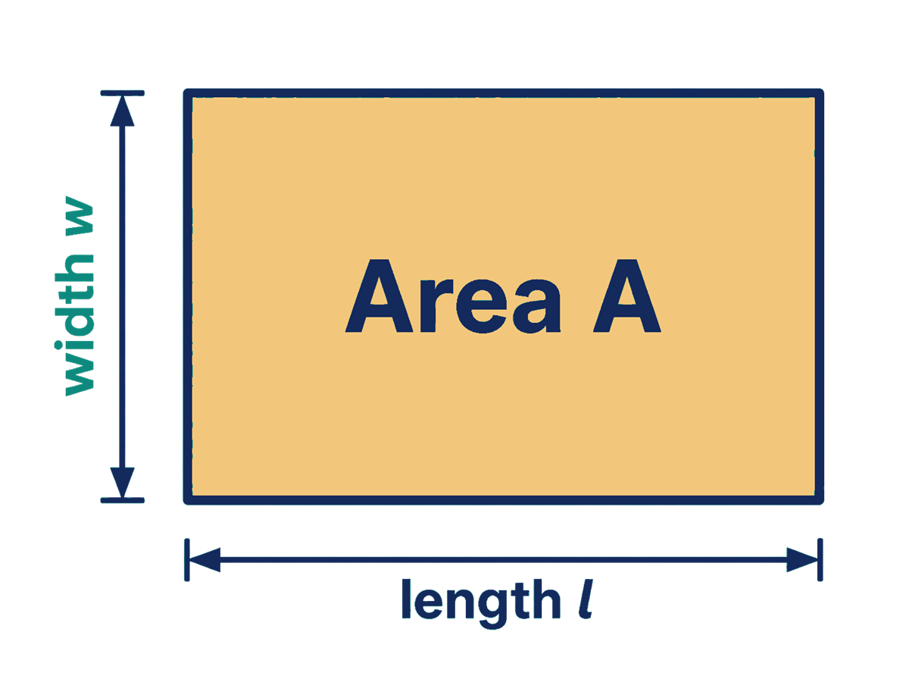
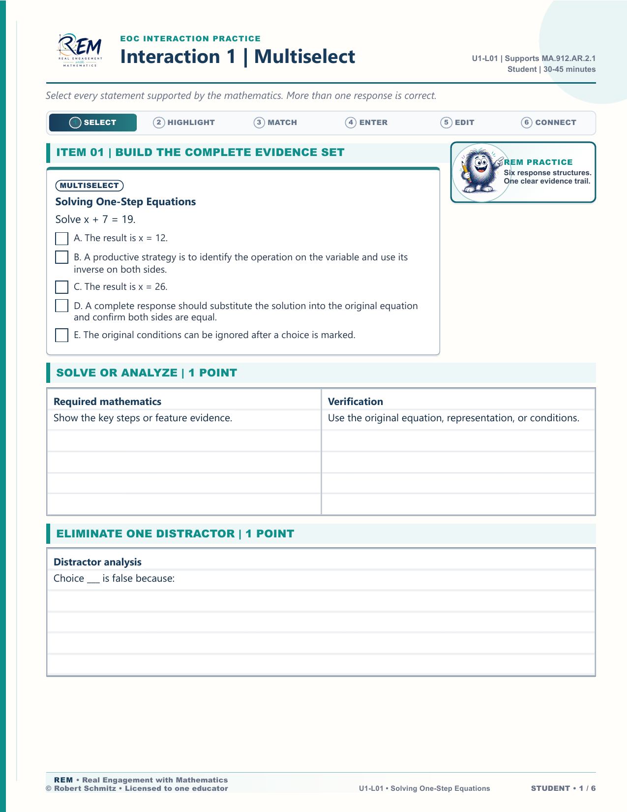
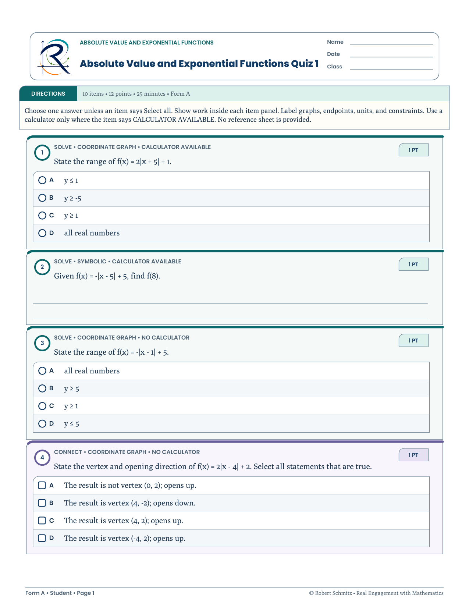

eLearning · HTML prototype / Storyline storyboard
Rearranging Formulas: HTML Prototype & Storyboard
Looking for a published Storyline course? Take the graphing course tour →
A working HTML feedback sample and a 16-slide storyboard for an Algebra 1 eLearning module. I designed the practice sequence, interaction states, and feedback. Storyline 360 assembly is pending; no authored Storyline module or SCORM package is available.
Overview
This storyboard and HTML prototype specify an interaction design for: Algebra 1, Unit 1, Lesson 5 — Rearranging Formulas (literal equations). Every screen, trigger, feedback string, restriction note, and narration line is specified slide by slide, so the Storyline 360 build is assembly against a spec rather than improvisation in the tool — and the module's highest-value check is playable right below, rebuilt in working HTML from that spec.
Learners already know how to solve for x when the answer is a number; this module teaches them to isolate any variable when the answer is another formula — the same inverse-operation moves, pointed at a letter instead of a value. Planned delivery targets Canvas or Schoology as SCORM or a web object, with a Modern player, Prev/Next-only navigation, and no sidebar menu.
The screens
Three slides rendered at the module's 1280×720 story size from the slide master specified below — cream ground, footer rule, brand mark, and semantic color held exactly: teal = target / correct, violet = the move to make, amber = verify.
{kind=link}

{kind=link}

{kind=link}

Storyboard screens rendered from my slide master spec. Storyline 360 assembly is the next production step; no SCORM package is published, and nothing here reproduces Storyline player chrome.
Try the HTML feedback prototype
Explore one item adapted from the storyboard’s planned quiz. Each choice has its own feedback. This HTML sample allows repeated selections and records no score; it does not demonstrate Storyline triggers, quiz gates, or LMS reporting.
Solve for x, assuming m ≠ 0.
y = mx + b Subtract b from both sides, then divide the entire quantity y − b by m. The prompt assumes m ≠ 0, so this division is valid. This explains the selected answer; a choice alone does not show your reasoning. This divides only b by m. Both terms in y − b must be divided by m: x = . Subtracting b from both sides gives y − b, not b − y. Reversing those terms changes the sign of the expression. Dividing first is valid, but every term must be divided by m: = x + . Then subtract , not b.The planned Storyline build specifies one attempt and 10 points for this item. Those constraints are not implemented in this HTML explorer.
Challenge
Classroom and remediation experience shows exactly where literal equations break down: learners who can solve 3x + 5 = 20 freeze at y = mx + b, and the single most common wreck is a grouping error — dividing only one term (writing x = y − instead of x = ). A second, quieter failure: nobody teaches when a rearrangement owes a restriction like m ≠ 0.
The design problem was a self-paced module that still felt instructional — not a quiz in disguise — where the known misconceptions are designed into the interactions and the feedback, not left for the teacher to catch later.
Audience
- Secondary Algebra 1 learners, including students in remedial or intensive supports
- Learners who may have gaps in prior knowledge and benefit from explicit modeling
- Teachers or facilitators assigning the module as pre-work, intervention, or review inside an LMS
My role
- Needs framing from classroom and remediation experience
- Learning objectives, outline, and interaction design
- Storyboard and interaction specification
- Feedback copy and formative check design
- Accessibility and navigation conventions
Constraints
- Must run inside common K–12 / higher-ed LMS environments
- Limited media production budget (no custom video shoot required)
- Readable on laptop; usable on tablet where possible
- Content accuracy and standards alignment non-negotiable
Design process
-
Analyze
Clarified the performance gap (rearranging any formula vs. solving one numeric equation), entry skills (inverse operations), and the two documented misconceptions — grouping errors and missing restrictions — drawn from teaching Algebra 1 and intensive courses.
-
Design
Wrote the complete production storyboard: 16 slides sequenced as Gagné-style events, a four-move method ("Box the target. Undo in reverse order. Keep groups together. Check."), and per-choice feedback drafted for every quiz distractor before any development began.
-
Develop
Specified screens for Storyline with a shared slide master (cream background, footer rule, brand mark), gated click-to-reveal states, and worked-example → try-it cycles. Feedback names the error type — "that only divides b" — not just "try again."
-
Evaluate (formative)
Reviewed against multimedia principles (signaling, segmenting, coherence — max five lines of text per instructional slide, one idea per screen) and Quality Matters–aligned checks; revised wording and pacing in the storyboard before build.
Design decisions
- Three worked examples in rising structural difficulty A = lw (one move) → d = rt (same move, new context, building transfer) → y = mx + b (two moves in reverse order, where the grouping misconception lives). Worked-example effect for novices; support fades into a try-it.
- The misconception gets its own screen real estate The storyboard specifies a struck-through "NOT THIS: x = y − " strip beside the correct form in the y = mx + b example, making the grouping error explicit.
- Planned gates sequence reveals and request a response The storyboard specifies ordered reveal bars, a Next button enabled after all cards are flipped, and an exit-ticket model answer enabled after a typed response. These triggers await the Storyline build; clicking or typing alone does not establish understanding.
- Per-choice feedback tied to the specific error Each quiz distractor is a named misconception with its own feedback string — "Close — but that only divides b. The entire quantity y − b must be divided by m." Formative assessment, not mere scoring.
- Restrictions as a first-class habit Every division by a variable earns an on-screen restriction chip (l ≠ 0, r ≠ 0, m ≠ 0) with a plain-language why — and "restrictions count" is an explicit quiz rule.
Storyboard — the planned 16-slide architecture
Every planned slide has one instructional job. Three worked examples increase in structural difficulty, reveal gates pace the sequence, and the proposed graded quiz revisits the modeled formulas with one transfer item. The map below describes the intended Storyline behavior.
Navigation is linear by default with optional review of prior screens, so learners who need to revisit a model can do so without hunting through menus.
Visual & interaction specification
The storyboard includes a written design specification for consistent Storyline production — the same design-system discipline used across the REM curriculum work.
Palette (flat fills only — no neon, no gradients)
- Navy #14295C
text & formulas - Teal #0D8A7D
targets & correct - Violet #9B4DCA
moves & affordances - Amber #F0A500
"check it" boxes - Cream #FDFBF6
background
Typography & layout rules
- 48pt slide titles · 44pt display formulas · 30pt body — sized for projection and small screens, never below spec minimums
- Maximum five lines of text on any instruction slide; one idea per screen (Mayer segmenting)
- Restriction notes always 28pt teal — a consistent visual signal for "this move has a condition"
- Shared slide master: footer rule, lesson tag, and brand mark on every slide including quiz slides
- Color is semantic: teal = target/correct, violet = the move to make, amber = verify
Feedback that teaches — designed before development
The storyboard addresses the predictable error directly. For the y = mx + b worked example, it specifies the correct form beside a struck-through wrong form:
That only divides b. Keep y − b together.
The whole quantity y − b is divided by m · m ≠ 0
The same misconception returns as a quiz distractor — and its feedback names the error instead of restating the rule:
Q3 · learner picks x = y −"Close — but that only divides b by m. The entire quantity y − b must be divided by m: x equals the quantity y minus b, divided by m."
Q4 · learner picks w = − 2l"You divided P by 2 but not 2l. Both terms get divided: w = = − l."
Q4 · learner stops early at w = P − 2l"You stopped one step early. After subtracting 2l you still have 2w, so divide both sides by 2."
Planned commitment gates (trigger specification)
- Recap slide: Next button disabled until all four inverse-operation cards are revealed — no skimming past prerequisites.
- Try-it slide: reveal bars unlock strictly in order (Step 1 → Step 2 → answer), so learners cannot jump to the answer.
- Exit ticket: the "Show the model answer" button stays disabled until the response field is non-blank — commit first, then compare.
- Quiz: one attempt per item, 10 points each, 80% pass with review and retry paths on the results slide.
Tools
Instructional assets and design references
The artifacts below show instructional assets and a parallel formative pattern from the classroom system. Published Storyline UI captures are pending production.
{kind=link}


{kind=link}

{kind=link}

Learning principles applied
Gagné’s events of instruction
Structured attention, presentation, guidance, practice, and feedback as deliberate module beats.
Mayer’s multimedia principles
Segmenting, signaling, and coherence to reduce extraneous load on math screens.
Gradual Release (GRR)
I do → we do → you do pacing inside interactive sequences.
ARCS motivation
Relevance and confidence built before higher-stakes independent items.
Production status & next step
Storyboard and specification: complete. Storyline 360 assembly: the next production step. One per-choice feedback interaction is implemented in HTML on this page; the slide master, gating triggers, and per-choice feedback strings are already written, the authored build, trigger testing, accessibility checks, and learner testing remain pending. No SCORM package is published yet, and nothing on this page simulates a Storyline player capture.
Outcome
The storyboard proposes a reusable pattern for concept-focused Algebra 1 eLearning: clear objectives, representation-centered instruction, and feedback that supports learning. It is suitable as intervention, review, or flipped pre-work depending on the facilitator’s pacing plan.
Learner impact has not been measured. The next evaluation follows an authored build and review with a learner cohort.
Reflection
Teaching intensive and remedial Algebra 1 made the cost of vague feedback obvious. In the Storyline storyboard, that insight became a design rule: every incorrect path should leave the learner smarter about the mathematics, not only aware that they were wrong. Next iterations would add optional challenge paths for learners who demonstrate early mastery, without forcing everyone through the same density of scaffolding.